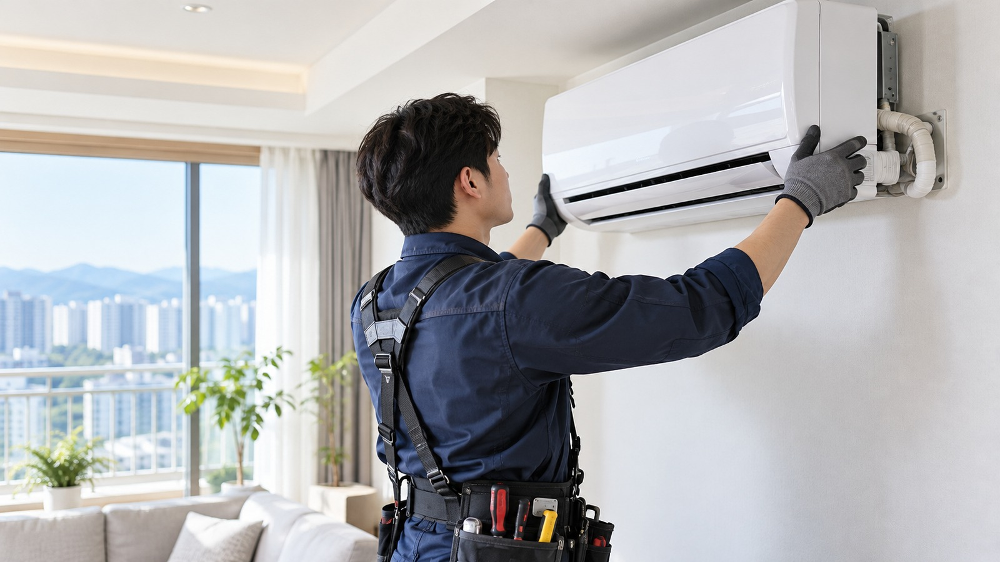

서울 관악구 낙성대동 현장에서 해당 항목이 나타나는지 먼저 확인합니다.
AIR CONDITIONER · LOCAL SERVICE
서울 관악구 낙성대동
서울 관악구 낙성대동
에어컨설치
서울 관악구 낙성대동에서 에어컨설치 관련 내용을 찾을 때는 현재 나타나는 증상과 현장 환경을 함께 확인하는 것이 좋습니다.

01 · OVERVIEW
서울 관악구 낙성대동에서
서울 관악구 낙성대동에서
먼저 확인할 내용
에어컨 설치는 기기만 옮기는 작업이 아니라 실내기와 실외기 위치, 배관 경로, 배수 조건과 설치 공간을 함께 확인해야 합니다.
서울 관악구 낙성대동 현장에서 해당 항목이 나타나는지 먼저 확인합니다.
서울 관악구 낙성대동 현장에서 해당 항목이 나타나는지 먼저 확인합니다.
02 · CHECK PROCESS
에어컨설치 확인 흐름
- 01설치 위치와 주변 환경 확인
서울 관악구 낙성대동의 실제 상태를 기준으로 필요한 범위를 순서대로 확인합니다.
- 02제품 형태와 배관 조건 점검
서울 관악구 낙성대동의 실제 상태를 기준으로 필요한 범위를 순서대로 확인합니다.
- 03설치 범위와 필요한 작업 구분
서울 관악구 낙성대동의 실제 상태를 기준으로 필요한 범위를 순서대로 확인합니다.
03 · LOCAL POINT
서울 관악구 낙성대동 현장 환경도
서울 관악구 낙성대동 현장 환경도
함께 살펴봅니다.
같은 에어컨설치 문제라도 아파트, 빌라, 단독주택, 상가 등 건물 형태와 설비 배치에 따라 확인해야 할 부분이 달라질 수 있습니다. 따라서 서울 관악구 낙성대동에서도 증상 발생 위치와 사용 환경을 함께 확인해 필요한 범위를 구분하는 과정이 중요합니다.
04 · FAQ
에어컨설치 자주 확인하는 내용
이전 설치도 같은 과정을 거치나요?
기존 제품 철거 상태와 새 설치 위치를 함께 확인해야 하므로 신규 설치와 확인 항목이 일부 다를 수 있습니다.
배관 길이는 왜 확인하나요?
실내기와 실외기의 거리와 이동 경로에 따라 필요한 배관 조건이 달라질 수 있기 때문입니다.
실외기 위치도 중요한가요?
통풍과 작업 공간, 설치 안전성에 영향을 줄 수 있어 실외기 주변 환경을 함께 확인합니다.
AREA DIRECTORY
상위 지역으로 돌아가기 →